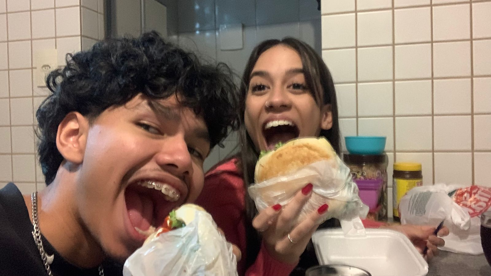
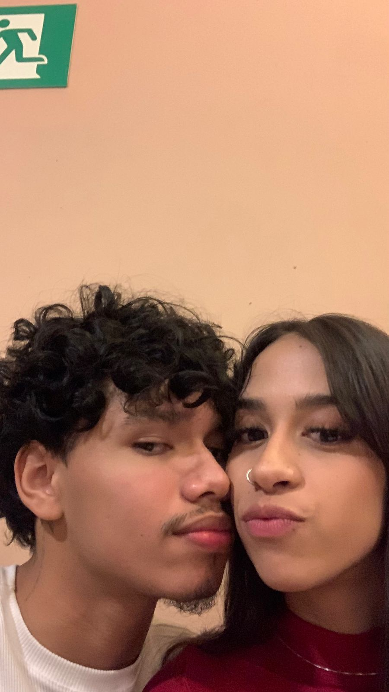
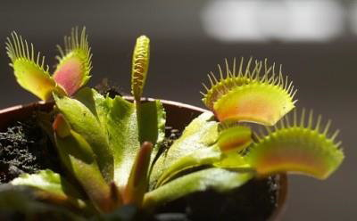
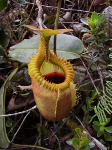

✕


As plantas carnívoras são espécies de vegetais que capturam, matam e digerem insetos ou outros pequenos animais, devido à presença de enzimas digestivas que extraem compostos nitrogenados e, assim como fonte de nutrientes, dependem do nitrogênio presente nas proteínas dos animais.
Em seu livro “Insectivorous Plants”, Charles Darwin escreveu sobre o processo de alimentação das plantas:
I will now give in detail my experiments on the digestive power of the secretion of Drosera, dividing the substances tried into two series, namely those which are digested more or less completely, and those which are not digested. We shall presently see that all these substances are acted on by the gastric juice of the higher animals in the same manner. (p. 92)
Darwin explica também que estas plantas conseguem florescer em solos pobres por causa da “absorption of animal matter from captured insects” (p.17), ou seja, elas conseguem os nutrientes necessários a partir da matéria animal capturada.
Você sabia? Há mais de 500 espécies de plantas carnívoras distribuídas no mundo todo, com exceção da Antártida. Veja uma lista extensa de espécies na Wikipedia.

As folhas das plantas carnívoras que possuem este tipo de armadilha estão divididas em duas partes, similar a uma boca, com gatilhos no interior. Este gatilho ao ser tocado pelo animal aciona um mecanismo que imediatamente fecha as metades da folha, sendo abertas somente após a digestão do animal. Ao contrário do que muitas pessoas pensam, estas enzimas proteolíticas são inofensivas à pele humana e aos animais de médio e grande porte. Esse tipo de armadilha é encontrada na Dionéia (Dionaea) que se alimenta principalmente de aranhas, moscas, lagartas, grilos, lesmas, entre outros.

Este tipo de armadilha é encontrado em todas as espécies de Utricularia, que vivem submersas em água doce ou brejos. Possuem utrículos que se assemelham a pequenas bolsas, contendo uma minúscula entrada cercada por gatilhos, e ao serem estimulados provocam a abertura dessa entrada. Quando a entrada é aberta, é sugado para dentro tudo que estiver ao redor, incluindo à presa que estimulou o gatilho.
Se você estiver interessado em comprar sementes, visite nossa lojinha.
>>>>>>> 227633e02682343f51977f100c1d365e46fc5632